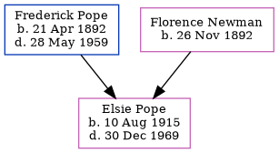

Elsie Louisa Mary Pope 1915 - 1969
[ Home ] | [ Calendar ] | [ Surnames Index ] | [ Family History ]A dressmaker and the eldest of 3 children of Frederick Pope (a fruiterer) and Florence Newman, Elsie Pope, the fourth cousin once-removed on the father's side of Nigel Horne, was born in Brentford, London, England on Aug 10, 19151,2,3.
Throughout her life, she lived on 86 District Road, Sudbury, London, England on Sep 29, 19391 and in 1969 (the same place as her father had been living on Sep 29, 1939).
She died on Dec 30, 1969 in Brent, London3,4.
Parents
- Frederick Ernest was born on Apr 21, 1892
- Florence Caroline was born on Nov 26, 1892
Citations
- 1939 Register - Findmypast (was the daughter of the head of the household)
- England & Wales births 1837-2006 - Findmypast
- England & Wales deaths 1837-2007 - Findmypast
- England & Wales Government Probate Death Index 1858-2019 - Findmypast
Media
England & Wales deaths 1837-2007 - BMD/D/1969/4/AZ/001018/045
England & Wales births 1837-2006 - BMD/B/1915/3/AZ/001112/058
England & Wales Government Probate Death Index 1858-2019 - GBOR/GOVPROBATE/C/1970-1970/00180168
1939 Register - TNA-R39-0946-0946I-016-29
Family Tree
Generated by Ged2Site. Last updated on Jul 20, 2025